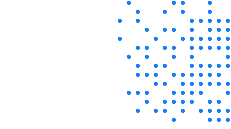
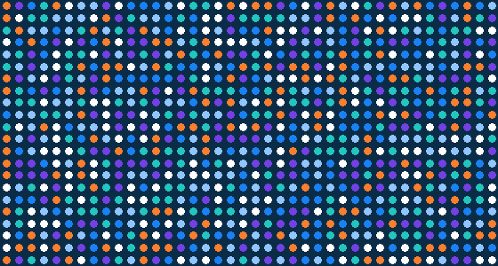
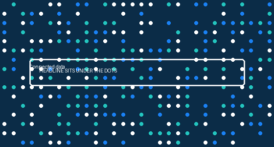
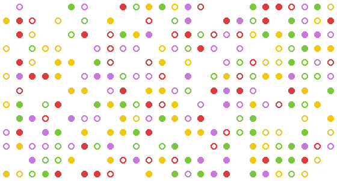

Primary graphic devices
The dots pattern
The dots are Rhapsody's primary graphic device. They symbolize many small data points, patients, systems, and interactions, coming together into one integrated whole: connectivity, scale, transformation, and precision. Used well, they elevate the brand and add texture and refinement while still standing out.
Pick a background, a color mode, and a pattern. There are two patterns, a graduated field and a uniform scattered field, plus dots used as framing and diagram elements (covered separately below). Whatever you choose, the dots stay to a corner or edge, cover no more than 50 percent of the space, and never overlap text.
Backgrounds and dot colors
Every dot field works the same way: pick a background, a color mode, and a pattern. Backgrounds are white, Rhapsody blue, or navy. Dots are either single color (white, navy, Rhapsody blue, or light blue) or multicolor. Use any combination that stays legible.
Two patterns
Graduated field. The signature Rhapsody pattern: an aligned grid where dot size changes, largest and densest at a corner and shrinking smoothly inward as the field fades in the same direction. Single color or multicolor.
Single color, white on navy.
Single color, white on blue.
Single color, navy on white.
Uniform scattered field. All dots are the same size on an aligned grid. Density depends only on distance from the anchoring edge: densest right at the edge and thinning steadily away from it, evenly along the whole length of that edge (for a side edge, the full height). It is a band that fades in one direction, not a corner blob or a triangle. Even at its densest, leave gaps, only about half to two thirds of the grid positions are filled, and individual dots drop out at random so the thinning looks organic. The field should breathe; when in doubt, remove dots. Equal size keeps it from reading as a wave. Single color or multicolor.
Single color, light blue on navy.

Single color, Rhapsody blue on white.
Multicolor on navy.
Anchor the field to a corner or edge and cover no more than 50 percent of the space. Density should read as airy, not packed: keep visible gaps everywhere, and let the field thin gradually as it moves away from its anchoring edge rather than stopping at a hard line. Never overlap text, keep a clear gap (at least the layout margin, about 6 to 7 percent). If multicolor, include one to five orange dots, few enough that orange reads as a surprise against the other colors. In the scattered field, every dot is the same size.
Framing and diagram elements
Beyond backgrounds, the dots can be composed into shapes, a ring, an arc, a network, or a corner cluster, that frame content or carry a simple idea. Use them as decorative and structural accents in creative work: digital display ads, white papers and reports, banners, and slides. Here the dots are always equal size, always multicolor but never orange, and carry no gradient fill. A faint connecting line is allowed for a diagram, never a squiggle. Coverage stays within 50 percent and clear of text.


Ring
Arc
Network
Corner cluster
At a glance: do and don't
- Graduated field (size changes) or uniform scattered field (equal size), on white, blue, or navy.
- Single color or multicolor; multicolor includes one to five orange dots. Exempt from the three-color rule.
- Anchored to a corner or edge, no more than 50 percent, with a clear gap from text.
- The one dot device in the layout.
- Full-view takeover, or more than 50 percent with no open space.
- Random placement or mixed sizes (reads as confetti).
- Dots over headlines, faces, or the logo, or crowding text with no gap.
- Off-palette colors, outline-only dots, or gradient fills inside dots.
- Low-contrast pairings (such as blue dots on the blue field), or dots plus a squiggle in one layout.
- Full columns with no gaps: the field must dissolve, never read as a solid block or bars.

Full-view takeover
Random scatter, mixed sizes

Dots over text, faces, or logo

Off-palette, outlines, or gradient fills
Solid block, no dissolve
Dot row accent
A short horizontal row of dots is an approved compact use of the dot motif, useful in banners and email headers where a full dot field would be too much.
- A few dots, one uniform size, evenly spaced.
- Sequence through brand colors, for example teal, blue, light blue, purple.
- Use as a small accent, not a full field. Do not combine with a dot field in the same layout.